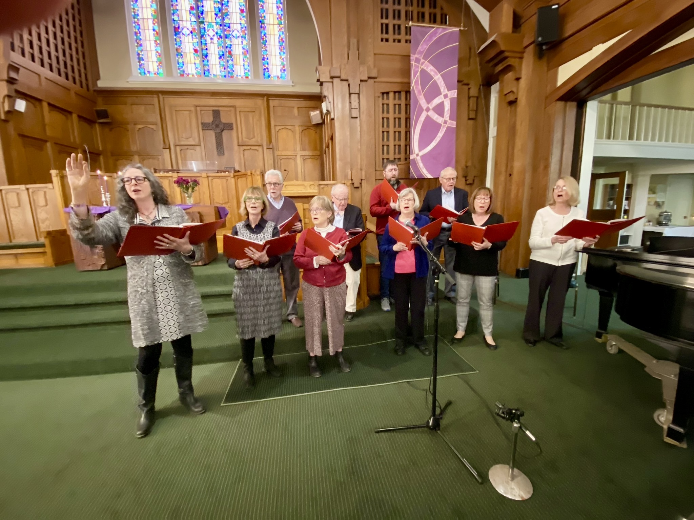
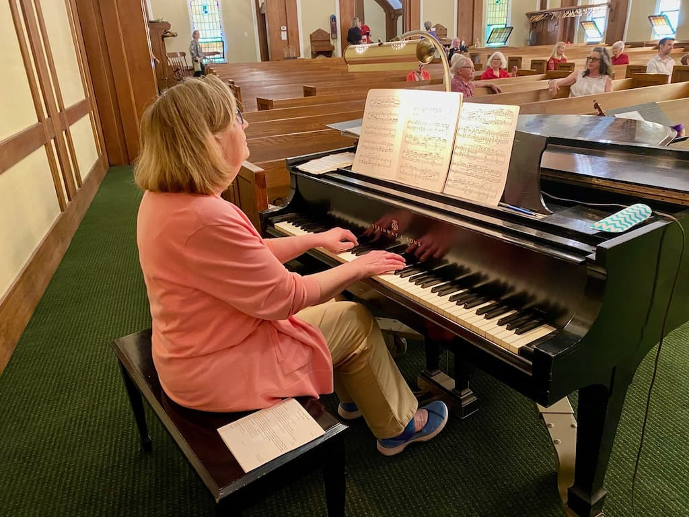

Music Ministry
Music is central to worship at FCCW. Our choir rehearses Wednesday evenings and sings most Sundays. Directed by Katherine Hughes. Instrumentalists and vocalists of all levels are welcome — no audition required.
Email the Music Director →
